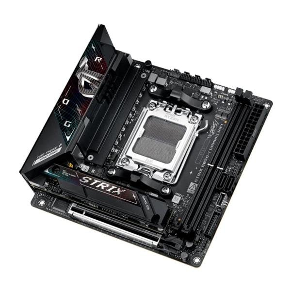

A placa-mãe ASUS ROG STRIX B850-I GAMING WIFI tem fator de forma Mini-ITX (17 cm x 17 cm) e chipset AMD B850, com soquete AM5 para processadores AMD Ryzen das séries 9000, 8000 e 7000. Conta com dois slots DIMM DDR5 de até 128 GB, Wi-Fi 7, Bluetooth 5.4 e Ethernet Intel 2.5Gb. O modelo traz ainda slots M.2, portas SATA de 6 Gb/s, slot PCIe 5.0 x16 e áudio ROG SupremeFX 7.1.